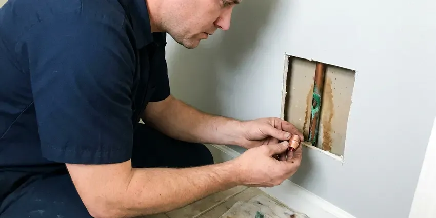

Septic Tank Repair in Biloxi, MS
Our crew fixes tanks, tees, effluent pumps and leach lines across Biloxi, MS, with a firm quote before the shovel goes in.
- Prices Before Digging
- Local Septic Techs
- Upfront Quotes
- Effluent Pump Repair

Septic Tank Acting Up in Biloxi, MS?
Our techs carry floats, tees and filters on the truck, so many repairs finish in one visit.
Septic Tank Repair in Biloxi, MS
Odors you cannot place, a lawn that stays wet, a toilet that gurgles, an alarm that chirps at two in the morning. We take these calls every week around Biloxi, and every symptom narrows to a few likely parts. A camera plus a steel probe usually find the problem in under an hour. Most are fixable.
Some of what we do:
- High water alarm service and rewiring
- Camera inspection of the line from house to tank
- Finding and sealing tank cracks

Additional Plumbing Repair Services in Biloxi, MS
We offer expert plumbing repair services across Biloxi, MS to stop leaks, clear blockages, and keep every fixture working the way it should.


Customers
Why Choose DFM Plumbing for Septic Tank Repair in Biloxi, MS?
We fix the cause, not the symptom. Pumping a tank that backed up from a broken inlet tee buys you a few weeks at most, so the tee gets checked before any pumping. The tee check takes ten minutes.
- Less Digging, Tee and filter repairs often happen through the access lid with no excavation at all.
- Local Ground Know-How, We have dug in the soils around Biloxi for years and know what lasts in that ground.
- Price Before Work, You get a firm price before any digging, and it does not change unless we find something new and tell you first.
Citywide Coverage
Acreage outside Biloxi is where most septic systems live, and that is where we spend a lot of our week. You pay the same rates out there. A ranch property gets quoted just like a lot in town.
Experienced Team
The technician who comes to your Biloxi home has worked on concrete and plastic tanks of every age, plus the steel ones that still turn up on older lots. They read a sludge judge and a camera feed without guessing. You can ask anything and get a straight answer.
Safety-First Approach
Septic tanks hold hydrogen sulfide and methane, and both can kill a person who leans in too far over an open lid. Nobody on our crew ever goes inside a tank, so all work happens from above. Open lids are covered when we step away. Gloves and eye protection stay on the whole time.
Trusted Certified Biloxi Plumbing Services Professionals
At DFM Plumbing, we take pride in licensed, certified plumbing services throughout Biloxi, MS. Credentials matter in this trade. Every repair, install and maintenance visit follows strict safety and quality rules, and the plumbers doing the work carry recognized industry credentials.
Call Us Now PHCC Plumbing Contractor Recognition
PHCC Plumbing Contractor Recognition Better Business Bureau (BBB) Accreditation
Better Business Bureau (BBB) Accreditation Angi Certified Pro
Angi Certified Pro ISO 9001 Quality Management Certification
ISO 9001 Quality Management CertificationFrom Tank to Drain Field: Septic Repair in Biloxi, MS
Emergency Septic Overflow in Biloxi
Raw sewage coming up through a tub drain carries bacteria you do not want on your skin or your floors. Keep everyone out of the area and shut off water use. We find the blockage and get flow moving, sometimes with a jetter and sometimes with a pump truck. Cleanup guidance comes with it.

Septic Maintenance and Small Repairs in Biloxi
A sludge judge, a long clear tube, tells us how full the tank really is. We measure sludge and scum on every maintenance visit, and we pump when the solids reach about a third of the tank depth. Filters get rinsed. Small cracks around the riser get sealed before groundwater finds them.
Camera Inspection of Septic Baffles in Biloxi, MS
Some tanks have no riser, so we run a push camera through the small inspection port to see the baffles. That saves digging up the whole lid. If the outlet tee is cracked or missing, we dig at that end only, then cut in a new PVC tee and an effluent filter housing. Concrete lids get a riser while they are open.
Drain Field Line Jetting in Biloxi
Distribution laterals clog from the inside with solids and slime, especially after years without pumping. We jet each lateral from the distribution box or a cleanout at the far end, and the water that comes back tells us how bad it is. Roots get cut. If the soil itself has sealed, jetting will not fix it, and we say so.
Effluent Pump Replacement in Biloxi, MS
Effluent pumps in a dosing chamber last roughly 8 to 15 years, and they usually quit without much warning at all. Humming with no flow points to a jammed impeller or a failed capacitor. Our tech pulls the old unit and checks the discharge before the new one goes in. Floats get replaced at the same time.
Septic Code and Permit Work in Biloxi, MS
New tanks and new fields need a permit from the local health authority in most of the country, along with any change to the system's layout. Our office prepares the site sketch and submits the permit, then schedule the inspection before the trench is backfilled. Small fixes like a tee usually skip the permit. The inspector's sign-off goes in your file.
Septic Tee Repair in Biloxi
Sanitary tees on the inlet and outlet can crack or get knocked off by the hose on a pump truck. Without the outlet tee, the floating scum layer drifts into the laterals and plugs the gravel. We glue in a new Schedule 40 tee. An effluent filter goes on if the outlet has room.

Septic Tank Leak Repair in Biloxi
A tank that never fills to the outlet, or one that fills slowly with groundwater after rain, has a leak. We pump it down and look at the walls and seams with a light, and dye flushed down a fixture shows us where the water moves. Hairline cracks get a hydraulic cement patch. Split tanks get replaced.
Septic Tank Repair Near Me in Biloxi, MS
Looking for septic repair near you usually means something is already wrong. Describe the symptoms when you call, since an alarm and a gurgle send us after different problems. The right parts come with the tech.
Search septic tank repair near me in Biloxi, MS and you will find plenty of pump trucks. Pumping is only part of the job. DFM Plumbing repairs the tank and the field lines too, so one crew handles the problem from the first call to the final inspection.
DFM Plumbing at a Glance
- Licensed and insured plumbers serving Biloxi, MS
- Same-day appointments and 24/7 emergency response
- Clear written estimates, no hidden fees
- 4.8-star rated by 503+ Mississippi customers
Biloxi Map
Biloxi Information
- Population
- 48,235
- Area codes
- 228/601/251
- Service area
- Biloxi and communities within 40 miles
- Nearby
- Gulfport, Pascagoula, Hattiesburg, Meridian
Slab and crawlspace foundations are typical, and soil movement under a slab can shift drain lines and supply pipes. The soil under the field sets how long it will keep taking water, so we check the field along with the tank in Biloxi, MS.
Talk to a Plumber
Call DFM Plumbing for honest, reliable plumbing from people who know the trade in Biloxi, MS.
Our Specialized Plumbing Services in Biloxi, MS
At DFM Plumbing, we handle the full list of plumbing services across Biloxi, MS. From leak detection to full system installs, our team works fast and charges fair prices on homes and commercial properties alike. Explore our core services below:


What Happens When We Fix Your Septic System in Biloxi, MS
Every septic job at DFM Plumbing follows the same three steps, so you know what comes next.
Tell Us the Symptoms
Slow drains or a sewage smell? Say so when you call so the tech brings the right parts.
Open and Check
We uncover the tank, check the baffles and pump and run a camera where it helps. You get written options.
Repair and Paperwork
After the repair we test flow, close everything up and hand you the paperwork.
Frequently Asked Questions About Septic Tank Repair in Biloxi
Small repairs like a broken tee or a stuck float usually run $300 to $700. Pump replacements land between $900 and $2,000, floats included, and replacing a drain field often runs $5,000 to $15,000 or higher, based on soil and size. You get the number after we diagnose it.
Sewage odor near the tank and slow drains throughout the house are the two most common early signs we see. Bright green grass over the field is another one. A tub that gurgles after a flush tells us air is being pushed around a clog.
The gas in a septic tank is mostly methane and hydrogen sulfide, and leaning over an open lid can knock you unconscious. People die in tanks every year, often trying to grab something they dropped. Concrete lids are also heavy enough to crush a hand. Leave the lid to us.
Soil decides how fast the field can take water, which decides how long it lasts. Slab and crawlspace foundations are typical, and soil movement under a slab can shift drain lines and supply pipes. Heavy clay drains slowly and floods trenches after big rains, while sand and gravel can pass effluent too fast to treat it. We dig a test hole before quoting field work.
Rotten-egg odor near the lid or the field is the giveaway most people notice first. In the house, the toilet drains slow and the tub burbles. Out in the yard, look for wet spots or puddles above the field lines during a long dry spell. Backups into the lowest drain come last.
We repair Zoeller and Liberty pumps nearly every week, along with SJE Rhombus alarm panels and the float switches that run them. We work on concrete tanks and plastic tanks alike. Aerobic units from the common manufacturers are on the list too, along with their aerators and timers.
A tee or pump swap usually needs no permit. A new tank or any field work normally does, and the health department typically inspects before anything is covered. We pull the permit and meet the inspector on site.
Stop running water right away, including the washer and dishwasher, so the level in the tank does not keep rising. Keep the family and pets clear of the spill. Then call (601) 265-9260 for an emergency visit. We clear the blockage and walk you through cleanup.
What Our Customers Say About Our Plumbing Experts

Daniel K.
A pipe burst in the garage ceiling at 11 at night. Someone answered on the second ring, and the plumber was in my driveway about fifty minutes later. He shut off the main, cut out the split section, and had water back on before 2 am.
Emergency Plumbing · Hattiesburg, MS
Lisa C.
Water was pouring out from under the washing machine on a holiday weekend. DFM Plumbing talked me through closing the valves over the phone and had a plumber at the house within ninety minutes. It was a burst fill hose.
Emergency Plumbing · Biloxi, MS
Mark T.
The floor drain in our office break room backed up every few weeks. The plumber ran a cable, then put a camera down and found roots at a joint about thirty feet out. Seeing it on the screen made the decision easy.
Drain Cleaning · Biloxi, MSNathan E.
Our tankless heater kept throwing an error code and shutting off mid shower. The tech flushed the heat exchanger, which was full of scale, and replaced a bad flow sensor. Hot water has been steady for half a year now.
Water Heater Repair · Meridian, MS
Karen W.
After our third pinhole leak in copper, we stopped patching. DFM Plumbing gave us a written plan room by room and repiped the house in PEX while we stayed in it. The crew covered our floors every morning and cleaned up every night.
Repiping · Pearl, MS
Laura S.
Our 40 gallon tank started leaking from the bottom after thirteen years. The tech hauled the old one out, set a new unit with a fresh expansion tank, and had hot water running in about four hours. He took the old tank with him too.
Water Heater Replacement · Pearl, MS